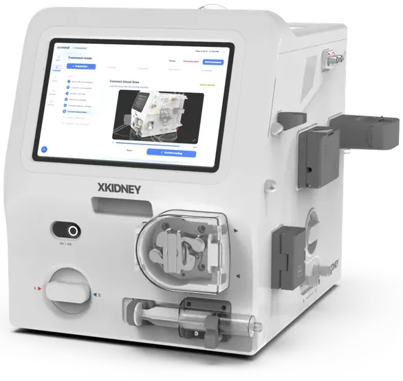
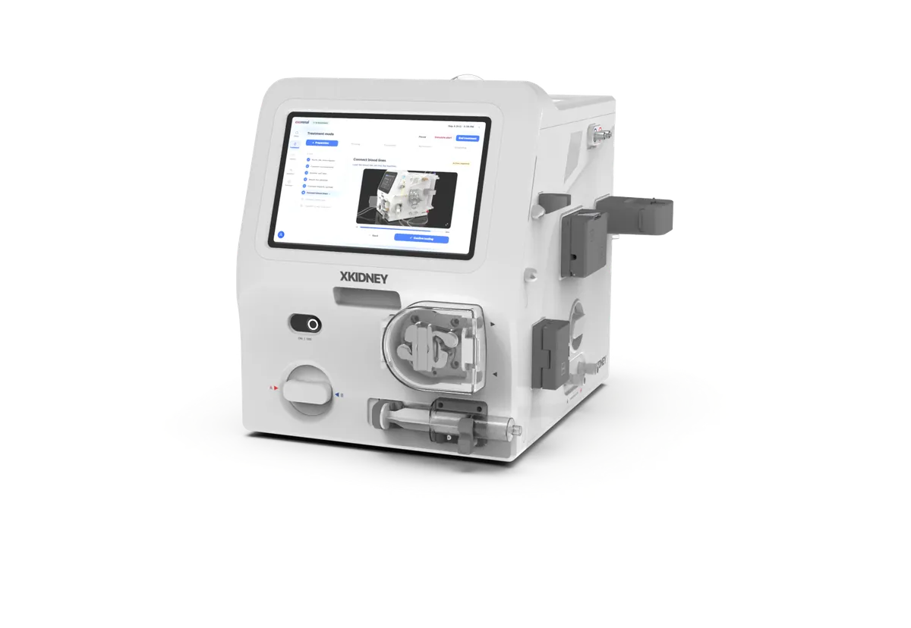
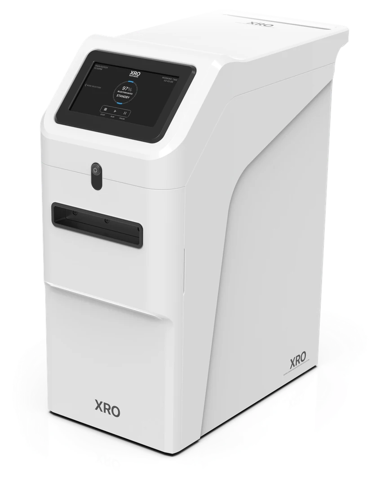
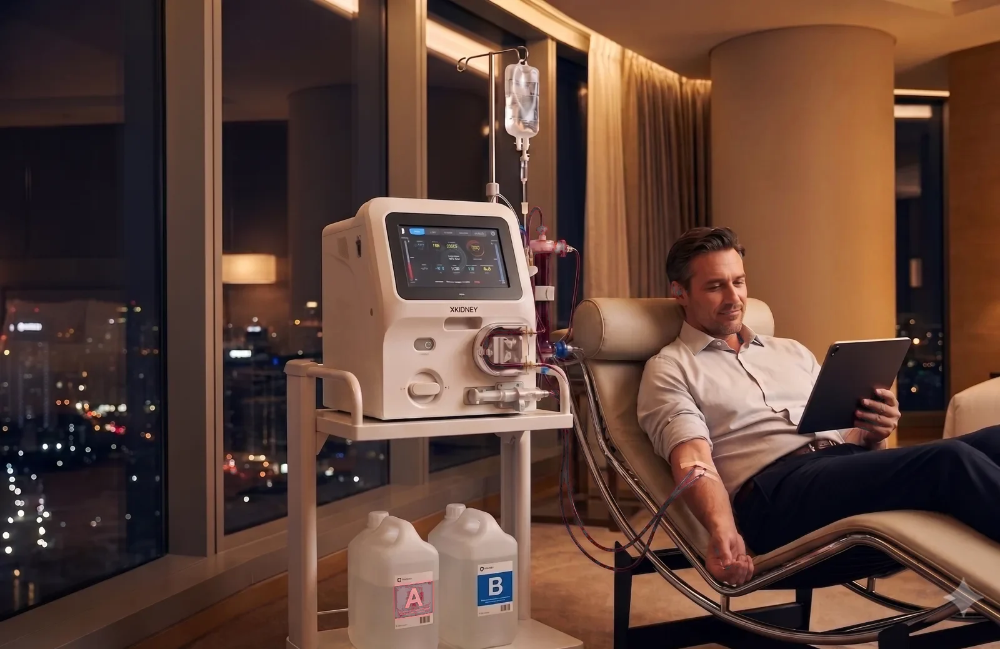
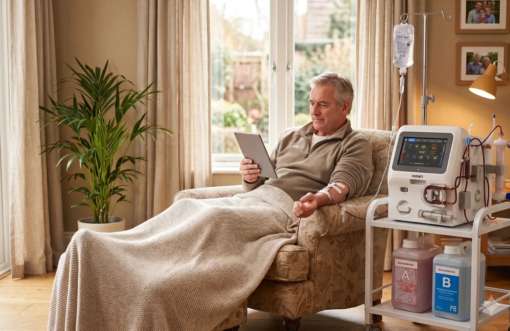
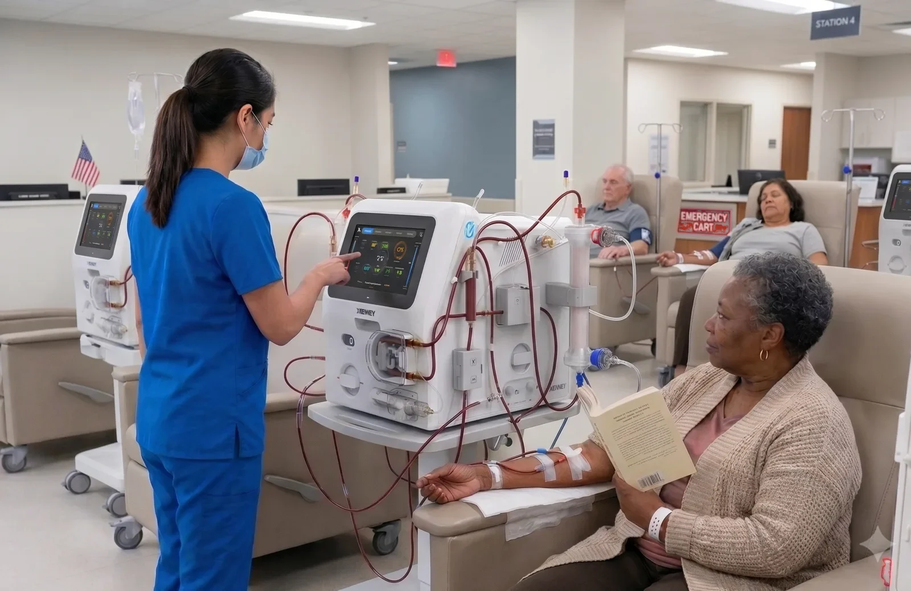

XKIDNEY
Hemodialysis system
- 4–5× smallerThan in-center machines
- 29 kgDevice weight
- Standard disposablesOff-the-shelf dialyzers and blood lines
XKIDNEY, a compact hemodialysis system on one cart.

Three times a week, four hours at a time. Patients have always fit their lives around dialysis. XKIDNEY was built so treatment can move to where patients live.
Than the machines in today's dialysis centers.
Rolls from room to room, home to hotel.
XRO turns tap water into dialysis-grade water.

Hemodialysis system

Portable reverse osmosis



Hospital-grade precision, wherever you are.
 Baltimore
Seoul
Baltimore
Seoul


Demos, technical documents and investor inquiries, all at one address.
Request a demo info@exorenal.com